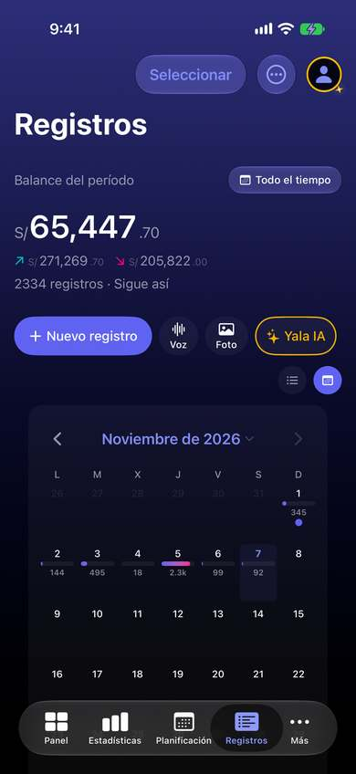
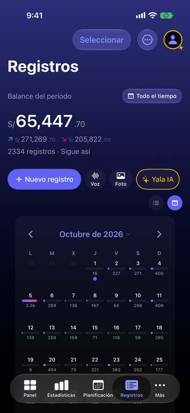
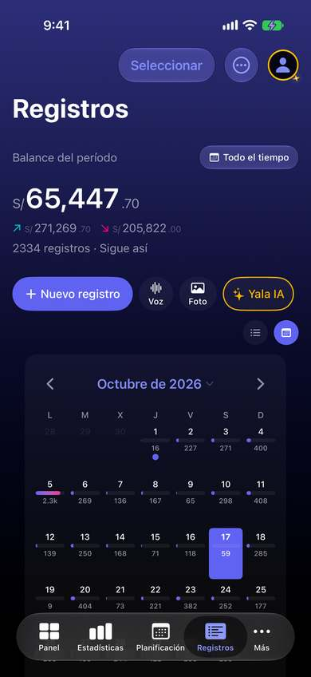
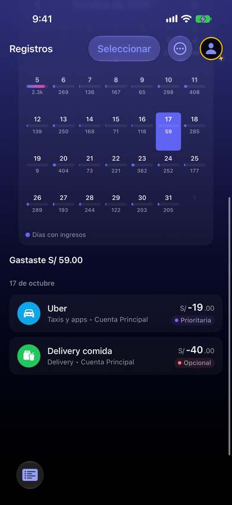
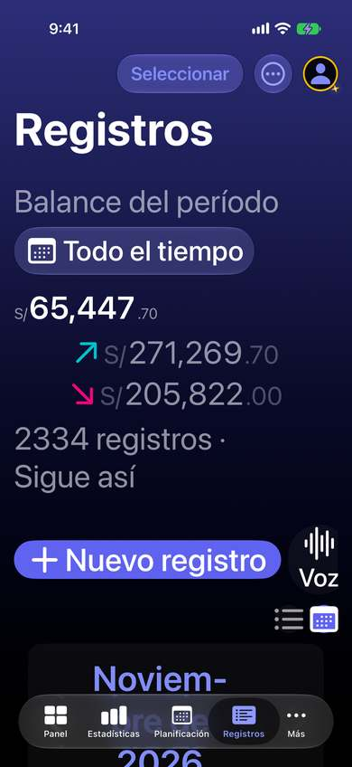

Al tocar un día del calendario, lo que cambia queda fuera de la pantalla
Hoy
Capturas del simulador con la semilla de pruebas «realista» (2.334 registros). Pasos hoy: 3 toques + 1 deslizamiento hasta ver las filas del 17.





De dónde sale
- Captura Capturas 09 y 09b: tras tocar el 17, arriba no cambia nada; el resumen y las filas aparecen al desplazar.
- Código
RecordsCalendarView.swift:332-341: cifra compacta en tamaño fijo, sin símbolo de moneda (marcada «A11Y-DT» a propósito). - Captura Árbol de accesibilidad de la captura 01: los botones Lista y Calendario miden 32 × 32 pt.
- Código
RecordsTabView.swift:39: el modo calendario es estado de la vista; al volver a Registros abre en lista. - Captura Con texto grande (AX3) el calendario empieza debajo del pliegue y el título se parte («Noviem-bre»).
- Captura Captura 08: con «Todo el tiempo», el calendario abre en el mes actual; a octubre se llega con «‹».
Las opciones
De 3 a 5 alternativas con el mismo caso. Desliza cada recorrido; el anillo cian marca dónde toca Ana.
El día elegido se abre en una hoja
Al tocar un día, sube una hoja a media altura con el resumen («Gastaste S/ 231.40 · 4 registros») y sus filas. El calendario queda detrás y se cierra deslizando.
A favor
- Lo que cambia al tocar aparece donde Ana mira, sin desplazar.
- Patrón conocido (Calendario de iOS, Mapas).
En contra
- Una hoja más encima de Registros (que ya abre el detalle en hoja).
- En iPad la lista y el detalle ya van en columnas: la hoja sobraría ahí.
El calendario se pliega a la semana
Al elegir un día, el mes se pliega a su semana (una fila) y la lista del día queda justo debajo, a la vista. Tocar «13 – 19 oct ▾» vuelve a desplegar el mes.
A favor
- Sin capas: el calendario y la lista conviven, y se puede pasar de día en día dentro de la semana.
- Funciona igual con texto grande, porque una semana cabe aunque el mes no quepa.
En contra
- Animación de plegado que hay que cuidar (y respetar «Reducir movimiento»).
- Toca el modo de mes paginado que ya existe en el calendario.
Cifras legibles: con moneda y que crecen
Las cifras de cada día llevan su símbolo («S/231») y crecen con el texto. Cuando no caben (texto grande o pantalla estrecha), la celda deja solo la barra y la cifra pasa al resumen del día.
A favor
- La cifra deja de ser un número suelto («2.3k» ¿de qué?).
- El calendario sirve también con texto grande.
En contra
- Reabre L8-10: se decidió que «la cifra corta de la celda se queda».
- Con dos monedas el mismo día, la celda no tiene sitio para las dos.
Lado a lado
La última pantalla de cada recorrido, frente a hoy.
Comparación
| Opción | Pasos para el caso (maqueta) | Esfuerzo | Riesgo | Reabre |
|---|---|---|---|---|
| Hoy | 3 toques + 1 deslizamiento hasta ver las filas del 17. | — | — | — |
| C1 · El día elegido se abre en una hoja | 3 toques | medio | bajo | — |
| C2 · El calendario se pliega a la semana | 3 toques | medio | bajo | — |
| C3 · Cifras legibles: con moneda y que crecen | igual que hoy | bajo-medio | bajo | L8-10 |
Lente de perfiles
Perfiles simulados, no entrevistas Los siete perfiles de la revisión del usuario nuevo, usados como lentes. riesgo alto de trabarse · medio · bajo.
| Perfil | Hoy | C1 | C2 | C3 |
|---|---|---|---|---|
| P1 · Migrante de Excel | cifras sin moneda | — | — | cifras con moneda |
| P2 · Principiante abrumado | toca y no ve qué pasó | ve el resultado del toque | ve qué pasó | — |
| P3 · Anotador rápido que no lee | no usa el calendario | — | — | — |
| P4 · Experto de otra app | desplaza cada vez | una capa más | salta de día en día | — |
| P5 · Llega por una invitación de grupo | — | — | — | — |
| P6 · Varias monedas y tarjeta | «2.3k» ¿soles o dólares? | totales en dos monedas | — | dos monedas el mismo día |
| P7 · Texto grande, a veces en iPad | cifras fijas y botones de 32 pt | la hoja crece con el texto | una semana cabe con texto grande | crece con el texto |
Recomendación: C2
Plegar el mes a la semana del día elegido deja ver el resultado del toque sin añadir capas, y es la que mejor aguanta el texto grande. C3 es un arreglo de legibilidad compatible con cualquiera de las dos, pero reabre L8-10.
Qué decide Jürgen
- ¿Plegar a la semana (C2) o abrir el día en una hoja (C1)?
- ¿Se reabre L8-10 para poner moneda en la celda (C3)?
- ¿Registros recuerda si la persona lo dejó en calendario?
Revisión por vistas 2.3 · Registros. Maquetas en HTML con datos ficticios: no son la app. Pasos contados sobre las maquetas; los de «Hoy», en el simulador o en el código citado.